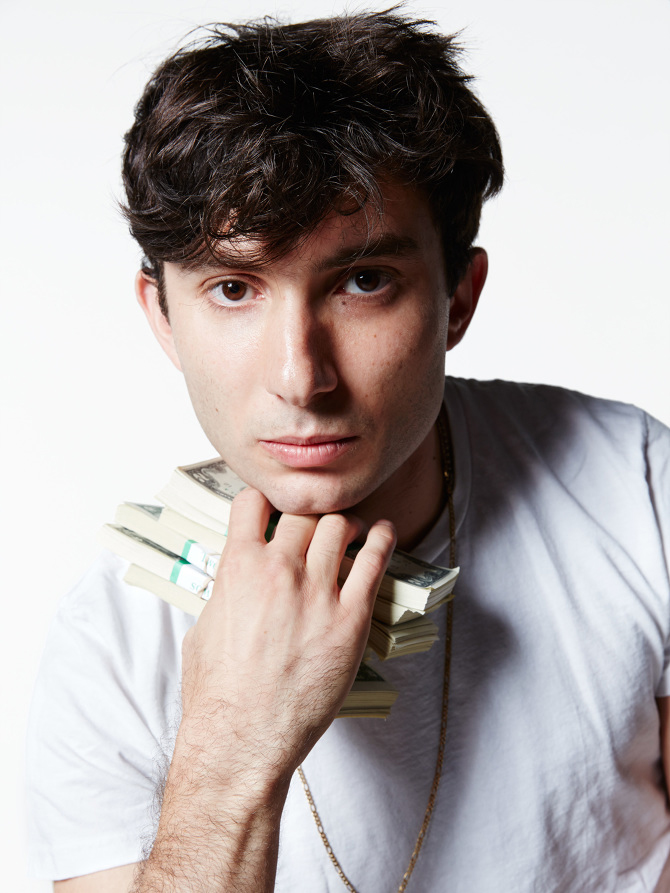
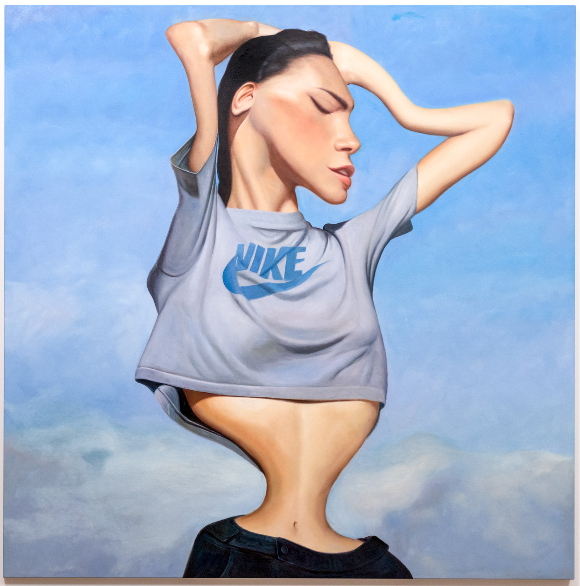

Райдер Риппс

Биография
Коммерческая работа
Художественные просизведения и первая выставка
Ссылки
Биография
Концептуальный художник, названный газетой Нью-Йорк Таймс "воплощением интернет-крутана, так же умело владеющего HTML и JavaScript, как и языков концепт-арта".
Родился в Нью-Йорке в 1986г. Его родители - близкие друзья Энди Уорхола - дизайнер Хелен Верин и художник Родни Рипс.
Окончил программу новых медиа в университете The New Scool в 2008г. Работы Райдера Рипса выставлялись в MoMa PS1, Eyebeam, Caroll/Fletcher и Royal College of Art.
Райдер Риппс - создатель нескольких веб-сайтов, включая Internet Archeology, Dump.fm, Been Trill и VFiles.
Коммерческая работа
Риппс является креативным директором OKFocus, агентства цифрового маркетинга и дизайна, и разработал контент для ряда современных музыкантов,
модных линий, и корпоративных брендов, таких как Nike и Red Bull.Риппс создал несколько веб-сайтов, в том числе Internet Archeology, Dump.fm и VFiles.
В 2013 году компания Ripps создала бренд Soylent,напитка-заменителя еды с открытым исходным кодом. В 2015 году он стал сопродюсером двух песен для
Miley Cyrus & Her Dead Petz. В 2018 году Риппс начал работать с Канье Уэстом в рамках компании Уэста DONDA.
Хо

Первая персональная выставка Риппса под названием Ho прошла в январе 2015 года в галерее Postmasters в Нью-Йорке . На нем были представлены крупномасштабные портреты,
написанные маслом, на обработанных цифровым способом изображениях из Instagram - аккаунта модели Адрианны Хо.
Шоу «занимается тем, как мы изображаем женщин, используя долгую историю манипулирования изображениями во имя секса и рекламы».
Тем не менее, прием был разным: Сандра Сонг написала для Иезавели , что «его сериал представляет собой интуитивный, рефлекторный способ убрать и исказить представление
о расширении прав и возможностей женщин», а также отмечает, что название шоу двусмысленно, так как «хо» на сленге означает проститутку.
Ссылки
- Википедия
- Инстаграмм
Использована информация из открытых источников